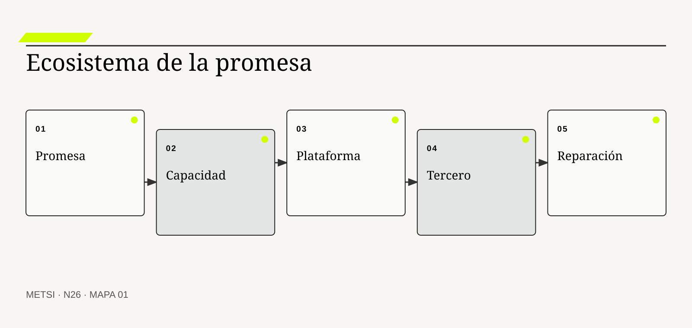
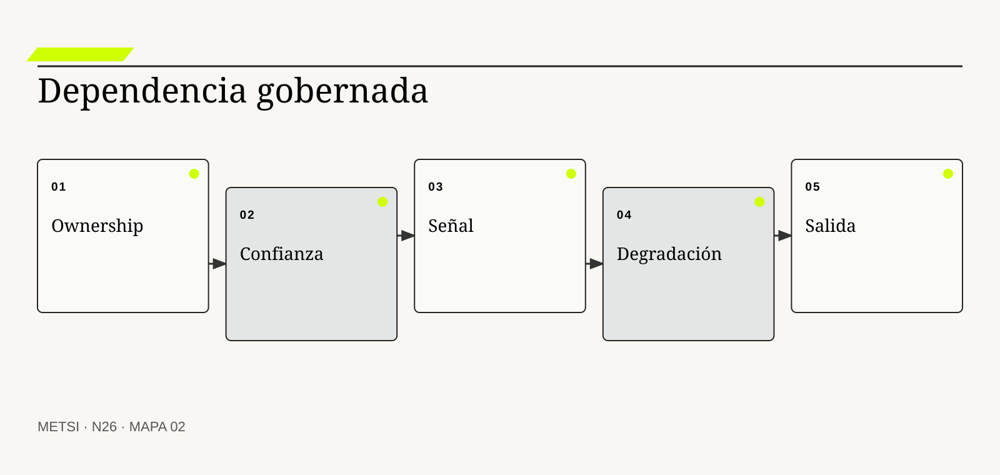
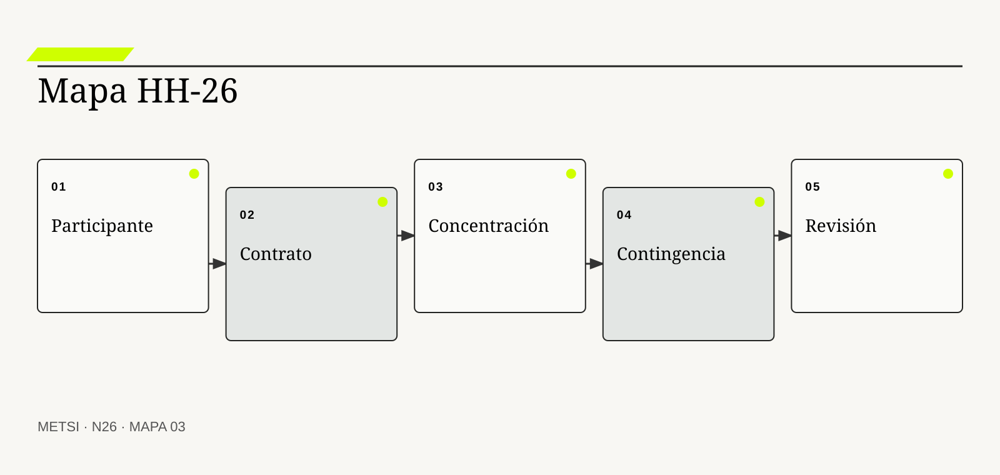

ITIL
Sitúa servicios y cocreación de valor dentro de relaciones organizacionales.

N26 amplía la arquitectura hacia un ecosistema de servicios, plataformas y terceros, y convierte dependencias invisibles en decisiones de ownership…
Ecosistema de servicios, plataformas y terceros
Ruta de lectura: problema, distinciones, decisiones, prueba, transferencia y preparación.
Nota. SIN NUM. identifica aparatos de orientación y referencia.
Seis voces para ampliar, contrastar y discutir N26.
Sitúa servicios y cocreación de valor dentro de relaciones organizacionales.
Analizaron plataformas, reglas y efectos de red.
Relaciona plataformas internas, interacción de equipos y flujo.

Integra riesgo de cadena de suministro durante el ciclo de vida.
Desplaza seguridad hacia decisiones de diseño y proveedor.
Define requisitos para sistemas de gestión de servicios.
N26 no resume estas fuentes ni las convierte en receta. Las pone en tensión para construir juicio profesional.
¿Cómo gobernar una promesa cuando depende de servicios internos, plataformas compartidas y terceros que ninguna unidad controla por completo?

N26 amplía la arquitectura hacia un ecosistema de servicios, plataformas y terceros, y convierte dependencias invisibles en decisiones de ownership, confianza…
Hotel Horizonte recibe a una familia que reservó por un canal externo. La habitación está limpia, el pago figura aprobado y la cerradura responde. Sin embargo, Recepción no puede completar el ingreso porque el proveedor de identidad devuelve un estado distinto del que conserva el canal de reservas.
Cada componente funciona dentro de su propio tablero. El canal confirma la venta, pagos confirma la autorización, identidad confirma la cuenta y el PMS confirma disponibilidad. La promesa falla en el vínculo entre esas certezas parciales. Nadie posee el recorrido completo ni puede reparar por sí solo todas sus dependencias.
Una arquitectura de ecosistema no es un inventario ampliado. Explicita capacidades, participantes, fronteras de confianza, contratos, datos, incentivos, modos de degradación y rutas de salida. También distingue qué se comparte, qué permanece autónomo y quién responde cuando una dependencia externa altera la experiencia.
El equipo reconstruye el episodio desde la reserva hasta la llave. Descubre una plataforma de identidad, cinco servicios internos, tres proveedores y dos decisiones manuales que nunca aparecieron en el diagrama técnico. El mapa incorpora responsables, criticidad, sustitución, evidencia y reparación.
La intervención no busca controlar lo incontrolable. Busca diseñar opciones antes de la falla, acordar señales antes del incidente y evitar que la complejidad contractual se convierta en abandono para quien espera en el mostrador.
N26 abre el Bloque F. Recibe de N25 una mirada sobre flujo y espera, y amplía la unidad de análisis hacia el conjunto de organizaciones, plataformas y servicios que sostienen la promesa en operación.
HH-26 toma el recorrido de ingreso y construye un mapa de ecosistema. Cada dependencia queda vinculada con una capacidad, un responsable, un contrato, una frontera de confianza, una señal de salud, un modo de degradación y una alternativa de salida. El mapa muestra que el huésped experimenta una sola promesa aunque la organización distribuya su realización entre múltiples participantes.
N26 amplía la arquitectura hacia un ecosistema de servicios, plataformas y terceros, y convierte dependencias invisibles en decisiones de ownership, confianza, resiliencia y salida.
N25 deja evidencia y decisiones abiertas que N26 utiliza sin reabrir su contenido. N26 amplía la arquitectura hacia un ecosistema de servicios, plataformas y terceros, y convierte dependencias invisibles en decisiones de ownership, confianza, resiliencia y salida.
N27 utilizará este mapa para precisar contratos sintácticos, semánticos, temporales y operacionales. N26 no define todavía cada interfaz ni sus pruebas de conformidad.
AXELOS aporta una fuente contrastable para definir alcance, evidencia y condiciones de revisión. En N26, ese aporte pone a prueba decisiones concretas y no funciona como respaldo ornamental. Su alcance se conserva en N26: ninguna referencia sustituye la evidencia del caso ni la autoridad necesaria para intervenir.
Parker, G. G., Van Alstyne, M. W. y Choudary, S. P. analiza plataformas, reglas y efectos de red en ecosistemas. En N26, ese aporte pone a prueba decisiones concretas y no funciona como respaldo ornamental. Su alcance se conserva en N26: ninguna referencia sustituye la evidencia del caso ni la autoridad necesaria para intervenir.
Tiwana, A. vincula arquitectura, gobierno y evolución de plataformas. En N26, ese aporte pone a prueba decisiones concretas y no funciona como respaldo ornamental. Su alcance se conserva en N26: ninguna referencia sustituye la evidencia del caso ni la autoridad necesaria para intervenir.
Skelton, M. y Pais, M. relacionan plataformas internas con interacción de equipos y flujo. En N26, ese aporte pone a prueba decisiones concretas y no funciona como respaldo ornamental. Su alcance se conserva en N26: ninguna referencia sustituye la evidencia del caso ni la autoridad necesaria para intervenir.
ISO/IEC establece requisitos de gestión para sostener servicios. En N26, ese aporte pone a prueba decisiones concretas y no funciona como respaldo ornamental. Su alcance se conserva en N26: ninguna referencia sustituye la evidencia del caso ni la autoridad necesaria para intervenir.
NIST integra riesgo de cadena de suministro durante el ciclo de vida. En N26, ese aporte pone a prueba decisiones concretas y no funciona como respaldo ornamental. Su alcance se conserva en N26: ninguna referencia sustituye la evidencia del caso ni la autoridad necesaria para intervenir.
NIST sitúa verificación y acceso en fronteras de confianza explícitas. En N26, ese aporte pone a prueba decisiones concretas y no funciona como respaldo ornamental. Su alcance se conserva en N26: ninguna referencia sustituye la evidencia del caso ni la autoridad necesaria para intervenir.
CISA aporta una fuente contrastable para definir alcance, evidencia y condiciones de revisión. En N26, ese aporte pone a prueba decisiones concretas y no funciona como respaldo ornamental. Su alcance se conserva en N26: ninguna referencia sustituye la evidencia del caso ni la autoridad necesaria para intervenir.
European Union incorpora portabilidad, acceso y condiciones de cambio de proveedor. En N26, ese aporte pone a prueba decisiones concretas y no funciona como respaldo ornamental. Su alcance se conserva en N26: ninguna referencia sustituye la evidencia del caso ni la autoridad necesaria para intervenir.
Ross, J. W., Weill, P. y Robertson, D. C. conectan arquitectura con capacidades y modelo operativo. En N26, ese aporte pone a prueba decisiones concretas y no funciona como respaldo ornamental. Su alcance se conserva en N26: ninguna referencia sustituye la evidencia del caso ni la autoridad necesaria para intervenir.
Hohpe, G. y Woolf, B. aportan patrones para intercambios, mensajería y fallas. En N26, ese aporte pone a prueba decisiones concretas y no funciona como respaldo ornamental. Su alcance se conserva en N26: ninguna referencia sustituye la evidencia del caso ni la autoridad necesaria para intervenir.
FinOps Foundation hace visible costo tecnológico como responsabilidad compartida. En N26, ese aporte pone a prueba decisiones concretas y no funciona como respaldo ornamental. Su alcance se conserva en N26: ninguna referencia sustituye la evidencia del caso ni la autoridad necesaria para intervenir.

Un ecosistema de servicio reúne participantes autónomos que sostienen una promesa mediante capacidades, reglas e intercambios interdependientes. La definición fija el objeto de decisión. Si el equipo de N26 no puede expresar qué compromiso organiza, la categoría funciona como etiqueta y no como instrumento.
No es una lista de proveedores ni una arquitectura encerrada dentro de una organización. La distinción evita que una palabra familiar oculte otro mecanismo. En N26, confundirlos cambia qué se observa, qué se acepta como avance y quién debe intervenir.
En ecosistema de servicio, el recorrido causal debe mostrar qué condición habilita la acción, qué transformación ocurre y quién absorbe el resultado. El valor emerge de coordinaciones que cruzan límites jurídicos, técnicos y operativos. Si un salto depende sólo de una explicación oral, la estrategia todavía no puede gobernarlo.
La evidencia relevante para ecosistema de servicio no se limita al resultado promedio. Se observa en recorridos, dependencias, incentivos, fallas y mecanismos de reparación. N26 busca además casos negativos, diferencias entre poblaciones y señales de que la explicación elegida podría ser insuficiente.
Ejemplo. Reserva, identidad, pago, disponibilidad y cerradura participan del mismo ingreso. En N26, el episodio vuelve visible la relación entre ritmo, autoridad, evidencia y capacidad de reparación.
El tradeoff central de ecosistema de servicio aparece entre anticipar y preservar opciones. Anticipar puede reducir coordinación y también fijar una premisa prematura; preservar opciones puede producir aprendizaje y también demorar una protección necesaria. La elección debe declarar cuál de esos costos acepta, durante cuánto tiempo y para quién.
La auditoría de ecosistema de servicio termina con una pregunta de uso: ¿qué podría decidir ahora una persona que antes no podía? En N26, la respuesta debe nombrar una acción, una restricción y una evidencia, no sólo una comprensión mejorada.
Operacionalizar ecosistema de servicio requiere asignar una unidad observable. El equipo define qué episodio contará, desde qué momento, con qué población y bajo qué fuente. Después compara al menos un caso ordinario con otro que fuerce excepción. Esta precisión en N26 evita que una conclusión general se sostenga sólo en ejemplos convenientes.
La decisión profesional no termina en adoptar ecosistema de servicio. Se compara una ruta principal con una explicación rival, se explicita quién queda expuesto y se conserva un modo de revisar. El mapa simplifica y debe declarar qué participantes y efectos quedan fuera. El límite forma parte del diseño y no una nota posterior.
Una capacidad de servicio combina personas, información, tecnología y autoridad para producir un resultado repetible. Conviene comenzar por su función profesional. Si el equipo de N26 no puede expresar qué compromiso organiza, la categoría funciona como etiqueta y no como instrumento.
No equivale a una aplicación, endpoint, equipo ni función de organigrama. El contraste importa porque conduce a pruebas distintas. En N26, confundirlos cambia qué se observa, qué se acepta como avance y quién debe intervenir.
El mecanismo de capacidad de servicio no se presume por el nombre. Agrupa recursos y decisiones alrededor de lo que debe poder hacerse bajo condiciones reales. Debe localizarse dónde comienza, qué relaciones activa, qué demora introduce y qué capacidad de reparación queda disponible cuando la expectativa no se cumple.
Una afirmación sobre capacidad de servicio gana fuerza cuando puede reconstruirse desde fuentes independientes. Episodios ordinarios y adversos muestran si la capacidad existe más allá del camino feliz. La ausencia de señal también se interpreta: puede significar estabilidad, mala observación o exclusión del caso que más importa.
Ejemplo. Entregar una habitación asignable requiere más que confirmar inventario. En N26, el episodio vuelve visible la relación entre ritmo, autoridad, evidencia y capacidad de reparación.
La escala modifica capacidad de servicio. Una solución válida para un equipo puede fallar cuando atraviesa sedes, turnos o proveedores porque aumenta la distancia entre señal y autoridad. Antes de ampliar, N26 prueba si la misma decisión conserva significado y reparación bajo esa nueva distribución.
Para evitar consenso aparente, capacidad de servicio se revisa con alguien afectado y con alguien responsable de reparar. Las dos perspectivas pueden valorar resultados diferentes y obligan a declarar la prioridad elegida.
En la práctica, capacidad de servicio atraviesa más de un área. Se identifican handoffs, esperas, decisiones y datos que cada participante puede ver. Cuando dos áreas usan evidencia distinta en N26, el expediente conserva la divergencia hasta determinar si representa error, perspectiva legítima o una brecha que la estrategia debe resolver.
En una revisión, capacidad de servicio debe responder tres preguntas: qué mejora, qué desplaza y qué vuelve más difícil de revertir. Una capacidad puede depender de acuerdos que la unidad responsable no controla. Si esas respuestas cambian, también debe cambiar el compromiso, aunque el trabajo previo haya sido técnicamente correcto.
Una plataforma compartida ofrece capacidades gobernadas que otros equipos o actores utilizan para construir y operar servicios. El concepto adquiere valor cuando cambia una decisión. Si el equipo de N26 no puede expresar qué compromiso organiza, la categoría funciona como etiqueta y no como instrumento.
No es infraestructura neutral ni una concentración automática de funciones. Su vecino conceptual puede parecer equivalente y no lo es. En N26, confundirlos cambia qué se observa, qué se acepta como avance y quién debe intervenir.
Comprender plataforma compartida exige seguir la decisión en el tiempo. Reduce coordinación mediante interfaces, estándares, autoservicio y reglas de evolución. El análisis distingue condición, intervención, señal temprana y consecuencia para evitar atribuir a una práctica un efecto producido por otro cambio simultáneo.
La prueba de plataforma compartida debe formularse antes de conocer el resultado. Adopción útil, tiempo de integración, confiabilidad y costo de salida revelan su desempeño. Se registra qué observación sostendría continuar, cuál obligaría a adaptar y cuál activaría detención o escalamiento.
Ejemplo. Identidad y pagos sirven a varios recorridos del hotel. En N26, el episodio vuelve visible la relación entre ritmo, autoridad, evidencia y capacidad de reparación.
El tiempo también altera plataforma compartida. Una evidencia suficiente para explorar puede ser insuficiente para operar de forma permanente. Por eso se separan prueba local, compromiso transitorio y condición estable, y cada estado conserva fecha, alcance y responsable de revisión.
El registro de plataforma compartida conserva una explicación rival. Si esa alternativa predice mejor el episodio siguiente, el equipo cambia de curso sin reescribir retrospectivamente lo que creía saber.
La gobernanza de plataforma compartida incluye quién puede proponer, aprobar, ejecutar, observar y reparar. Esas funciones no se presumen por cargo ni por permiso técnico. N26 las prueba en un escenario donde falta la persona habitual, porque una capacidad que sólo funciona con conocimiento privado todavía no pertenece a la organización.
El juicio sobre plataforma compartida incluye distribución de consecuencias. Una plataforma puede acelerar a unos participantes y crear dependencia para otros. Una mejora agregada no alcanza si concentra espera, riesgo o trabajo invisible en un grupo sin autoridad para discutir la decisión.
Un tercero crítico es un participante externo cuya falla o decisión puede comprometer una promesa material. La definición fija el objeto de decisión. Si el equipo de N26 no puede expresar qué compromiso organiza, la categoría funciona como etiqueta y no como instrumento.
No todo proveedor es crítico y criticidad no coincide con gasto contractual. La distinción evita que una palabra familiar oculte otro mecanismo. En N26, confundirlos cambia qué se observa, qué se acepta como avance y quién debe intervenir.
La explicación operacional de tercero crítico conecta personas, reglas y tecnología. La criticidad surge de concentración, sustituibilidad, tiempo de recuperación y alcance del impacto. Esa conexión permite decidir qué parte puede modificarse localmente y cuál requiere coordinación con otras autoridades o capacidades.
Para auditar tercero crítico, conviene combinar evidencia de diseño, ejecución y consecuencia. Escenarios de indisponibilidad, datos incompletos y cambio unilateral permiten evaluarla. Ninguna fuente domina automáticamente; una especificación correcta puede convivir con una operación dañina.
Ejemplo. El canal de reservas es crítico cuando concentra demanda y excepciones. En N26, el episodio vuelve visible la relación entre ritmo, autoridad, evidencia y capacidad de reparación.
Existe además una dimensión política en tercero crítico. La opción más eficiente puede reducir la capacidad de una persona para cuestionar una decisión o trasladar trabajo sin reconocerlo. N26 registra esa distribución y no la esconde dentro de un indicador agregado.
Una prueba adversa de tercero crítico introduce demora, ausencia de autoridad o dato incompleto. El objetivo de N26 no es cubrir todas las fallas, sino revelar si la estrategia mantiene una salida segura fuera del camino ordinario.
El indicador de tercero crítico se elige después de formular la decisión. Puede combinar tiempo, calidad, distribución y costo de reparación. Una cifra aislada rara vez explica el mecanismo. En N26, la lectura conjunta de señales evita optimizar velocidad mientras aumenta retrabajo, exclusión o dependencia.
La condición de cierre de tercero crítico no es perfección. La clasificación cambia con el diseño y debe revisarse. Es evidencia suficiente para el uso previsto, riesgo residual aceptado por autoridad y una ruta clara cuando el supuesto deje de cumplirse.

Ownership de capacidad reúne autoridad persistente para priorizar, observar, coordinar y reparar una promesa. Conviene comenzar por su función profesional. Si el equipo de N26 no puede expresar qué compromiso organiza, la categoría funciona como etiqueta y no como instrumento.
No es un contacto de escalamiento ni responsabilidad sin recursos. El contraste importa porque conduce a pruebas distintas. En N26, confundirlos cambia qué se observa, qué se acepta como avance y quién debe intervenir.
Para que ownership de capacidad sea algo más que una etiqueta, debe existir una cadena examinable. Conecta decisiones de producto, operación, arquitectura, seguridad y relación con terceros. La cadena incluye supuestos, handoffs y efectos laterales que una descripción ideal suele omitir.
El equipo no declara resuelto ownership de capacidad por acuerdo retórico. Se verifica cuando alguien puede limitar exposición, acordar cambios y financiar recuperación. Una persona ajena al diseño debe poder repetir la prueba y comprender por qué el resultado habilita una decisión concreta.
Ejemplo. Ingreso conserva un owner aunque sus componentes pertenezcan a áreas distintas. En N26, el episodio vuelve visible la relación entre ritmo, autoridad, evidencia y capacidad de reparación.
La mantenibilidad de ownership de capacidad se prueba mediante cambio deliberado. Se modifica una regla, una fuente o una dependencia y se observa quién detecta el impacto, cuánto tarda en responder y qué información necesita. En N26, si la respuesta depende de memoria privada, la capacidad todavía es frágil.
El costo de ownership de capacidad se observa tanto en presupuesto como en atención, espera, coordinación y dependencia. Lo que no figura en una factura puede seguir siendo el costo que define la viabilidad.
La transición asociada con ownership de capacidad necesita un estado intermedio explícito. Durante ese período conviven reglas, versiones o capacidades diferentes. N26 declara cuál rige para cada población, cómo se comunica y qué contingencia protege a quien podría quedar entre ambos sistemas.
El análisis de ownership de capacidad evita dos extremos: conservar por inercia y cambiar por identidad metodológica. Una sola persona no puede absorber obligaciones distribuidas ni reemplazar acuerdos formales. Entre ambos queda una decisión provisional con fecha, responsable y prueba de revisión.
Un mapa de dependencias representa qué necesita cada capacidad, en qué secuencia y bajo qué supuestos. El concepto adquiere valor cuando cambia una decisión. Si el equipo de N26 no puede expresar qué compromiso organiza, la categoría funciona como etiqueta y no como instrumento.
No es un diagrama estático de cajas y flechas. Su vecino conceptual puede parecer equivalente y no lo es. En N26, confundirlos cambia qué se observa, qué se acepta como avance y quién debe intervenir.
El valor de mapa de dependencias aparece al contrastar alternativas. Vincula dependencias técnicas con datos, autoridad, contratos y trabajo humano. Si dos opciones producen el mismo entregable inmediato, el mecanismo permite compararlas por aprendizaje, dependencia, riesgo residual y posibilidad de salida.
La suficiencia de evidencia para mapa de dependencias depende del costo de equivocarse. Trazas, entrevistas, incidentes y pruebas de conmutación contrastan el mapa. A mayor irreversibilidad o desigualdad de daño, mayor contraste, supervisión y autoridad se requieren.
Ejemplo. La llave depende de identidad, pago, estado de habitación y autorización local. En N26, el episodio vuelve visible la relación entre ritmo, autoridad, evidencia y capacidad de reparación.
Finalmente, mapa de dependencias debe convivir con otras decisiones. Optimizarla de manera aislada puede empeorar flujo, seguridad o comprensión. El expediente N26 explicita dependencias y evita que una mejora local se presente como outcome completo del sistema.
La revisión de mapa de dependencias fija fecha y desencadenante. Puede ocurrir por incidente, cambio normativo, nueva población o evidencia acumulada. Sin esa regla en N26, una decisión provisional se vuelve permanente por olvido.
El cierre de mapa de dependencias debe sobrevivir a una revisión independiente. La evidencia, las decisiones y los límites se almacenan de manera que otra persona pueda cuestionarlos. En N26, la trazabilidad no busca eliminar desacuerdo; busca que el desacuerdo se concentre en supuestos examinables y no en recuerdos incompatibles.
La estrategia debe poder explicar por qué mapa de dependencias recibe cierta inversión y no otra. La dependencia informal puede quedar oculta si sólo se inspecciona software. Esa explicación conecta valor, costo, aprendizaje y reparación, y permanece abierta a evidencia nueva.
Una frontera de confianza marca dónde cambian las garantías, la autoridad y la evidencia aceptada. La definición fija el objeto de decisión. Si el equipo de N26 no puede expresar qué compromiso organiza, la categoría funciona como etiqueta y no como instrumento.
No coincide necesariamente con red, empresa, nube ni componente. La distinción evita que una palabra familiar oculte otro mecanismo. En N26, confundirlos cambia qué se observa, qué se acepta como avance y quién debe intervenir.
En frontera de confianza, el recorrido causal debe mostrar qué condición habilita la acción, qué transformación ocurre y quién absorbe el resultado. Obliga a declarar qué afirmaciones se reciben, cómo se verifican y qué ocurre ante contradicción. Si un salto depende sólo de una explicación oral, la estrategia todavía no puede gobernarlo.
La evidencia relevante para frontera de confianza no se limita al resultado promedio. Controles de acceso, procedencia, reconciliación y auditoría muestran su tratamiento. N26 busca además casos negativos, diferencias entre poblaciones y señales de que la explicación elegida podría ser insuficiente.
Ejemplo. El PMS no acepta sin verificación cualquier estado enviado por el canal. En N26, el episodio vuelve visible la relación entre ritmo, autoridad, evidencia y capacidad de reparación.
El tradeoff central de frontera de confianza aparece entre anticipar y preservar opciones. Anticipar puede reducir coordinación y también fijar una premisa prematura; preservar opciones puede producir aprendizaje y también demorar una protección necesaria. La elección debe declarar cuál de esos costos acepta, durante cuánto tiempo y para quién.
La auditoría de frontera de confianza termina con una pregunta de uso: ¿qué podría decidir ahora una persona que antes no podía? En N26, la respuesta debe nombrar una acción, una restricción y una evidencia, no sólo una comprensión mejorada.
Operacionalizar frontera de confianza requiere asignar una unidad observable. El equipo define qué episodio contará, desde qué momento, con qué población y bajo qué fuente. Después compara al menos un caso ordinario con otro que fuerce excepción. Esta precisión en N26 evita que una conclusión general se sostenga sólo en ejemplos convenientes.
La decisión profesional no termina en adoptar frontera de confianza. Se compara una ruta principal con una explicación rival, se explicita quién queda expuesto y se conserva un modo de revisar. Demasiada desconfianza puede volver inviable el servicio; demasiada confianza concentra riesgo. El límite forma parte del diseño y no una nota posterior.
Responsabilidad compartida distribuye tareas sin diluir quién responde por la consecuencia completa. Conviene comenzar por su función profesional. Si el equipo de N26 no puede expresar qué compromiso organiza, la categoría funciona como etiqueta y no como instrumento.
No significa que todos sean responsables de todo. El contraste importa porque conduce a pruebas distintas. En N26, confundirlos cambia qué se observa, qué se acepta como avance y quién debe intervenir.
El mecanismo de responsabilidad compartida no se presume por el nombre. Asigna obligaciones por capa y conserva una autoridad para el resultado end-to-end. Debe localizarse dónde comienza, qué relaciones activa, qué demora introduce y qué capacidad de reparación queda disponible cuando la expectativa no se cumple.
Una afirmación sobre responsabilidad compartida gana fuerza cuando puede reconstruirse desde fuentes independientes. Matrices de decisión, acuerdos, ejercicios e incidentes prueban si la distribución funciona. La ausencia de señal también se interpreta: puede significar estabilidad, mala observación o exclusión del caso que más importa.
Ejemplo. El proveedor protege la plataforma y el hotel gobierna configuración, acceso y reparación al huésped. En N26, el episodio vuelve visible la relación entre ritmo, autoridad, evidencia y capacidad de reparación.
La escala modifica responsabilidad compartida. Una solución válida para un equipo puede fallar cuando atraviesa sedes, turnos o proveedores porque aumenta la distancia entre señal y autoridad. Antes de ampliar, N26 prueba si la misma decisión conserva significado y reparación bajo esa nueva distribución.
Para evitar consenso aparente, responsabilidad compartida se revisa con alguien afectado y con alguien responsable de reparar. Las dos perspectivas pueden valorar resultados diferentes y obligan a declarar la prioridad elegida.
En la práctica, responsabilidad compartida atraviesa más de un área. Se identifican handoffs, esperas, decisiones y datos que cada participante puede ver. Cuando dos áreas usan evidencia distinta en N26, el expediente conserva la divergencia hasta determinar si representa error, perspectiva legítima o una brecha que la estrategia debe resolver.
En una revisión, responsabilidad compartida debe responder tres preguntas: qué mejora, qué desplaza y qué vuelve más difícil de revertir. Los modelos genéricos no sustituyen el reparto específico de cada servicio. Si esas respuestas cambian, también debe cambiar el compromiso, aunque el trabajo previo haya sido técnicamente correcto.

Degradación diseñada mantiene una parte segura y valiosa de la promesa cuando una dependencia falla. El concepto adquiere valor cuando cambia una decisión. Si el equipo de N26 no puede expresar qué compromiso organiza, la categoría funciona como etiqueta y no como instrumento.
No es tolerar silenciosamente peor calidad ni ocultar una caída. Su vecino conceptual puede parecer equivalente y no lo es. En N26, confundirlos cambia qué se observa, qué se acepta como avance y quién debe intervenir.
Comprender degradación diseñada exige seguir la decisión en el tiempo. Define capacidades mínimas, prioridades, comunicación y límites antes del incidente. El análisis distingue condición, intervención, señal temprana y consecuencia para evitar atribuir a una práctica un efecto producido por otro cambio simultáneo.
La prueba de degradación diseñada debe formularse antes de conocer el resultado. Pruebas de falla y tiempos reales muestran si el modo degradado es practicable. Se registra qué observación sostendría continuar, cuál obligaría a adaptar y cuál activaría detención o escalamiento.
Ejemplo. Recepción entrega una llave temporal bajo control cuando identidad externa no responde. En N26, el episodio vuelve visible la relación entre ritmo, autoridad, evidencia y capacidad de reparación.
El tiempo también altera degradación diseñada. Una evidencia suficiente para explorar puede ser insuficiente para operar de forma permanente. Por eso se separan prueba local, compromiso transitorio y condición estable, y cada estado conserva fecha, alcance y responsable de revisión.
El registro de degradación diseñada conserva una explicación rival. Si esa alternativa predice mejor el episodio siguiente, el equipo cambia de curso sin reescribir retrospectivamente lo que creía saber.
La gobernanza de degradación diseñada incluye quién puede proponer, aprobar, ejecutar, observar y reparar. Esas funciones no se presumen por cargo ni por permiso técnico. N26 las prueba en un escenario donde falta la persona habitual, porque una capacidad que sólo funciona con conocimiento privado todavía no pertenece a la organización.
El juicio sobre degradación diseñada incluye distribución de consecuencias. Algunas obligaciones no admiten degradación y requieren detener. Una mejora agregada no alcanza si concentra espera, riesgo o trabajo invisible en un grupo sin autoridad para discutir la decisión.
Riesgo de concentración aparece cuando múltiples capacidades dependen de un mismo proveedor, dato o punto de control. La definición fija el objeto de decisión. Si el equipo de N26 no puede expresar qué compromiso organiza, la categoría funciona como etiqueta y no como instrumento.
No se reduce a participación de mercado ni a disponibilidad histórica. La distinción evita que una palabra familiar oculte otro mecanismo. En N26, confundirlos cambia qué se observa, qué se acepta como avance y quién debe intervenir.
La explicación operacional de riesgo de concentración conecta personas, reglas y tecnología. Una falla común propaga consecuencias que los tableros por servicio no anticipan. Esa conexión permite decidir qué parte puede modificarse localmente y cuál requiere coordinación con otras autoridades o capacidades.
Para auditar riesgo de concentración, conviene combinar evidencia de diseño, ejecución y consecuencia. Inventarios, escenarios y análisis de dependencia revelan exposición acumulada. Ninguna fuente domina automáticamente; una especificación correcta puede convivir con una operación dañina.
Ejemplo. Identidad compartida puede detener reservas, ingreso y accesos internos. En N26, el episodio vuelve visible la relación entre ritmo, autoridad, evidencia y capacidad de reparación.
Existe además una dimensión política en riesgo de concentración. La opción más eficiente puede reducir la capacidad de una persona para cuestionar una decisión o trasladar trabajo sin reconocerlo. N26 registra esa distribución y no la esconde dentro de un indicador agregado.
Una prueba adversa de riesgo de concentración introduce demora, ausencia de autoridad o dato incompleto. El objetivo de N26 no es cubrir todas las fallas, sino revelar si la estrategia mantiene una salida segura fuera del camino ordinario.
El indicador de riesgo de concentración se elige después de formular la decisión. Puede combinar tiempo, calidad, distribución y costo de reparación. Una cifra aislada rara vez explica el mecanismo. En N26, la lectura conjunta de señales evita optimizar velocidad mientras aumenta retrabajo, exclusión o dependencia.
La condición de cierre de riesgo de concentración no es perfección. Duplicar proveedores también agrega complejidad y no garantiza independencia. Es evidencia suficiente para el uso previsto, riesgo residual aceptado por autoridad y una ruta clara cuando el supuesto deje de cumplirse.
Portabilidad y salida preservan la posibilidad de mover datos, procesos y responsabilidades sin quebrar la promesa. Conviene comenzar por su función profesional. Si el equipo de N26 no puede expresar qué compromiso organiza, la categoría funciona como etiqueta y no como instrumento.
No es una cláusula ornamental ni una migración improvisada al final. El contraste importa porque conduce a pruebas distintas. En N26, confundirlos cambia qué se observa, qué se acepta como avance y quién debe intervenir.
Para que portabilidad y salida sea algo más que una etiqueta, debe existir una cadena examinable. Se diseña con formatos, derechos, conocimiento, pruebas, costos y continuidad. La cadena incluye supuestos, handoffs y efectos laterales que una descripción ideal suele omitir.
El equipo no declara resuelto portabilidad y salida por acuerdo retórico. Ensayos de exportación, sustitución y recuperación verifican la opción. Una persona ajena al diseño debe poder repetir la prueba y comprender por qué el resultado habilita una decisión concreta.
Ejemplo. El hotel puede recuperar reservas y reglas si cambia de canal. En N26, el episodio vuelve visible la relación entre ritmo, autoridad, evidencia y capacidad de reparación.
La mantenibilidad de portabilidad y salida se prueba mediante cambio deliberado. Se modifica una regla, una fuente o una dependencia y se observa quién detecta el impacto, cuánto tarda en responder y qué información necesita. En N26, si la respuesta depende de memoria privada, la capacidad todavía es frágil.
El costo de portabilidad y salida se observa tanto en presupuesto como en atención, espera, coordinación y dependencia. Lo que no figura en una factura puede seguir siendo el costo que define la viabilidad.
La transición asociada con portabilidad y salida necesita un estado intermedio explícito. Durante ese período conviven reglas, versiones o capacidades diferentes. N26 declara cuál rige para cada población, cómo se comunica y qué contingencia protege a quien podría quedar entre ambos sistemas.
El análisis de portabilidad y salida evita dos extremos: conservar por inercia y cambiar por identidad metodológica. Una salida técnicamente posible puede ser operacionalmente inviable. Entre ambos queda una decisión provisional con fecha, responsable y prueba de revisión.
Gobernanza del ecosistema coordina reglas comunes entre participantes que conservan autonomía. El concepto adquiere valor cuando cambia una decisión. Si el equipo de N26 no puede expresar qué compromiso organiza, la categoría funciona como etiqueta y no como instrumento.
No equivale a centralizar toda decisión ni a confiar sólo en contratos. Su vecino conceptual puede parecer equivalente y no lo es. En N26, confundirlos cambia qué se observa, qué se acepta como avance y quién debe intervenir.
El valor de gobernanza del ecosistema aparece al contrastar alternativas. Combina foros, estándares, métricas, escalamiento, incentivos y revisión. Si dos opciones producen el mismo entregable inmediato, el mecanismo permite compararlas por aprendizaje, dependencia, riesgo residual y posibilidad de salida.
La suficiencia de evidencia para gobernanza del ecosistema depende del costo de equivocarse. Cambios de interfaz e incidentes muestran si el gobierno anticipa y aprende. A mayor irreversibilidad o desigualdad de daño, mayor contraste, supervisión y autoridad se requieren.
Ejemplo. Hotel, canal y proveedor acuerdan estados, avisos y reparación. En N26, el episodio vuelve visible la relación entre ritmo, autoridad, evidencia y capacidad de reparación.
Finalmente, gobernanza del ecosistema debe convivir con otras decisiones. Optimizarla de manera aislada puede empeorar flujo, seguridad o comprensión. El expediente N26 explicita dependencias y evita que una mejora local se presente como outcome completo del sistema.
La revisión de gobernanza del ecosistema fija fecha y desencadenante. Puede ocurrir por incidente, cambio normativo, nueva población o evidencia acumulada. Sin esa regla en N26, una decisión provisional se vuelve permanente por olvido.
El cierre de gobernanza del ecosistema debe sobrevivir a una revisión independiente. La evidencia, las decisiones y los límites se almacenan de manera que otra persona pueda cuestionarlos. En N26, la trazabilidad no busca eliminar desacuerdo; busca que el desacuerdo se concentre en supuestos examinables y no en recuerdos incompatibles.
La estrategia debe poder explicar por qué gobernanza del ecosistema recibe cierta inversión y no otra. El participante con más poder puede imponer costos que el mecanismo formal no corrige. Esa explicación conecta valor, costo, aprendizaje y reparación, y permanece abierta a evidencia nueva.
El instrumento organiza una decisión concreta y no una descripción total. Cada campo debe completarse con evidencia disponible, incertidumbre explícita y autoridad identificada. Si un campo todavía no puede responderse, se registra como asunto abierto y no se completa por inferencia.
El expediente se prueba con un escenario ordinario y uno adverso. Una persona que no participó en su construcción debe poder reconstruir qué se decidió, por qué, qué permanece incierto y cuál es la próxima puerta. El cierre no exige certeza total; exige incertidumbre gobernada y una salida practicable.
Un hospital coordina turnos con obras sociales, laboratorios, identidad provincial y servicios internos. Cada actor conserva autonomía, pero la persona experimenta un único recorrido.
El mapa distingue qué puede resolver el hospital, qué debe acordar y qué necesita una vía degradada. Una autorización externa ausente no se convierte automáticamente en abandono clínico.
HH-26 permite gobernar la promesa sin fingir control total sobre el ecosistema.
Un equipo presenta un diagrama con servicios, colas y APIs y lo llama mapa de ecosistema.
No aparecen operadores, proveedores, contratos, decisiones manuales, concentración ni salida. El dibujo explica conectividad y oculta la promesa.
La arquitectura se vuelve útil cuando relaciona dependencias con autoridad, consecuencias y reparación.
La prueba integral de ecosistema de servicios, plataformas y terceros toma una decisión real y la recorre desde su origen hasta una consecuencia observable. Utiliza promesa y población, capacidades, participantes, ownership end-to-end para evitar que el análisis quede dividido en artefactos independientes. Cada afirmación debe encontrar una fuente, una autoridad y una condición de revisión. Cuando dos registros no coinciden, la diferencia se conserva como hallazgo hasta explicar su mecanismo.
El escenario ordinario verifica que n26 amplía la arquitectura hacia un ecosistema de servicios, plataformas y terceros, y convierte dependencias invisibles en decisiones de ownership, confianza, resiliencia y salida. El escenario adverso modifica una dependencia, introduce demora y deja ausente a la persona que suele resolver. El equipo observa si la estrategia detecta el cambio, limita el daño, comunica incertidumbre y activa reparación sin recurrir a conocimiento privado.
La comparación incluye una alternativa descartada. Se documenta por qué no fue elegida, qué supuesto la volvería preferible y qué costo tendría recuperarla. Este ejercicio protege opciones futuras y evita presentar la decisión actual como única solución técnicamente posible. También vuelve discutibles los costos hundidos cuando aparece evidencia nueva.
La prueba concluye con una defensa breve ante una audiencia ajena al equipo. Esa audiencia debe poder reconstruir el problema, objetar la evidencia y comprender por qué la salida propuesta es proporcional. Si sólo puede repetir la recomendación, el expediente todavía no sostiene una decisión profesional. Si puede reconocer límites y actuar ante una excepción, existe capacidad transferible.
Confundir ecosistema con inventario simplifica una decisión que depende de propósito, evidencia y consecuencia. La velocidad inicial se paga cuando operación descubre el supuesto omitido. La corrección vuelve al episodio, identifica quién absorbe el costo y define una prueba antes de continuar.
Dibujar sólo tecnología parece reducir coordinación, pero confunde acuerdo con conocimiento suficiente. El equipo debe comparar una explicación rival, localizar autoridad y registrar qué señal cambiaría el curso elegido.
Asignar ownership sin autoridad desplaza incertidumbre hacia personas que no participaron de la elección. Corregirlo exige reconstruir el mecanismo, hacer visible el trabajo añadido y establecer una condición de salida proporcional al daño posible.
Tratar al tercero como caja negra convierte una práctica en fin. La revisión pregunta qué función debía cumplir, qué evidencia produjo y por qué sigue siendo necesaria. Si la función desapareció, la práctica se adapta o se retira.
Ignorar concentración oculta una frontera. El artefacto puede cerrar y la capacidad seguir incompleta. Un escenario adverso permite observar handoffs, excepciones y reparación antes de ampliar compromiso.
Confiar sin verificar confunde cumplimiento formal con decisión defendible. Se necesita conectar fuente, interpretación, implementación y efecto, incluyendo la autoridad que acepta el riesgo residual.
Degradar sin límite suele premiar lo visible y dejar fuera mantenimiento, soporte y aprendizaje. La corrección compara el ciclo completo, documenta dependencia y ensaya una salida real.
Prometer sustitución instantánea reduce diversidad de casos a un promedio conveniente. Se revisan poblaciones, extremos y daños asimétricos para evitar que una mejora global silencie una pérdida crítica.
Olvidar trabajo manual borra memoria y vuelve inexplicable el cambio de rumbo. Una baseline y un registro breve permiten conservar razones sin inmovilizar la estrategia.
Gobernar sólo por contrato deja responsabilidad sin capacidad. El diseño debe unir permiso, recursos, evidencia y posibilidad de reparar; nombrar un dueño no crea por sí mismo una función operativa.
N26 amplía la arquitectura hacia un ecosistema de servicios, plataformas y terceros, y convierte dependencias invisibles en decisiones de ownership, confianza, resiliencia y salida. El avance profesional consiste en sostener una promesa bajo condiciones reales, con autoridad, evidencia y reparación, no en declarar que la solución quedó disponible.

Ninguna arquitectura, contrato, prueba, control ni tablero elimina el juicio situado.
Ninguna arquitectura, contrato, prueba, control ni tablero elimina el juicio situado. Las dependencias cambian, la evidencia llega con demora, la operación distribuye poder y una mejora local puede desplazar daño. El expediente debe conservar población afectada, supuestos, autoridad, degradación aceptable, reparación y fecha de revisión.
N27 utilizará este mapa para precisar contratos sintácticos, semánticos, temporales y operacionales. N26 no define todavía cada interfaz ni sus pruebas de conformidad.
N26 amplía la arquitectura hacia un ecosistema de servicios, plataformas y terceros, y convierte dependencias invisibles en decisiones de ownership, confianza, resiliencia y salida.
El bloque no propone reemplazar una doctrina por otra. Propone hacer visibles las decisiones que cada práctica organiza, la evidencia que necesita y los daños que puede producir. El resultado es una intervención que puede explicarse, probarse y revisarse.
Ecosistema de servicio: un ecosistema de servicio reúne participantes autónomos que sostienen una promesa mediante capacidades, reglas e intercambios interdependientes.
Capacidad de servicio: una capacidad de servicio combina personas, información, tecnología y autoridad para producir un resultado repetible.
Plataforma compartida: una plataforma compartida ofrece capacidades gobernadas que otros equipos o actores utilizan para construir y operar servicios.
Tercero crítico: un tercero crítico es un participante externo cuya falla o decisión puede comprometer una promesa material.
Ownership de capacidad: ownership de capacidad reúne autoridad persistente para priorizar, observar, coordinar y reparar una promesa.
Mapa de dependencias: un mapa de dependencias representa qué necesita cada capacidad, en qué secuencia y bajo qué supuestos.
Frontera de confianza: una frontera de confianza marca dónde cambian las garantías, la autoridad y la evidencia aceptada.
Responsabilidad compartida: responsabilidad compartida distribuye tareas sin diluir quién responde por la consecuencia completa.
Degradación diseñada: degradación diseñada mantiene una parte segura y valiosa de la promesa cuando una dependencia falla.
Riesgo de concentración: riesgo de concentración aparece cuando múltiples capacidades dependen de un mismo proveedor, dato o punto de control.
Portabilidad y salida: portabilidad y salida preservan la posibilidad de mover datos, procesos y responsabilidades sin quebrar la promesa.
Gobernanza del ecosistema: gobernanza del ecosistema coordina reglas comunes entre participantes que conservan autonomía.
Para el encuentro, seleccionar una intervención conocida, completar el instrumento con evidencia verificable y preparar una decisión provisional. Incluir una explicación rival, una condición que obligaría a revisar y una consecuencia para una persona afectada.